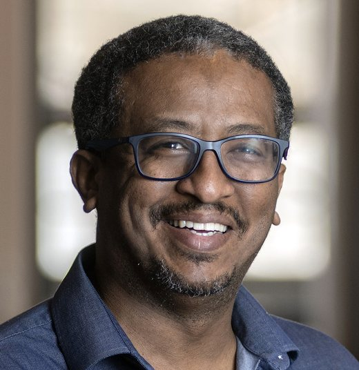

Sultan Hassan
AI alignment researcher, ex-astrophysicist (PhD), and Staff Applied Scientist at Sayari.
I study how to notice an AI system going wrong before it shows in behavior: by watching the geometry of training, reading model internals with probes, and building judges that evaluate agents reliably.
About
I spent a decade as a computational astrophysicist, building machine learning for noisy, high-dimensional data from the early universe: generative models, simulation-based inference, and methods that hold up out of distribution. That work came with fellowships from NASA (Hubble), the Flatiron Institute, and New Mexico State University, and more than 40 peer-reviewed papers, including at NeurIPS, ICML, and ICLR.
I now work full-time on making AI systems trustworthy. At Sayari's AI Innovation Lab I lead the development of AI judge models and benchmarks for agentic systems. Alongside that, I research and mentor on alignment: early-warning signals for emergent misalignment, how fine-tuning choices shape generalization, and monitors that keep working when the data shifts.
Current research
-
Oct 2026 to now
Can optimization geometry predict emergent misalignment?
Research mentor, BASE Research
Leading a team of three fellows. We project training-time optimization geometry onto alignment-relevant subspaces, found with linear probes and steering vectors, and test whether it predicts misalignment before it becomes behaviorally observable. Controlled fine-tuning runs, misalignment-inducing against neutral, test both whether the signal predicts and whether it is specific to misalignment.
-
Aug 2026 to now
AI judges for agentic systems
Staff Applied Scientist, Sayari AI Innovation Lab
Developing the evaluation and trust layer for agentic AI: training and evaluating specialized judge models, and building the benchmarks that tell us when to trust them.
-
Feb 2026 to now
Influencing generalization via localized fine-tuning
AI alignment researcher, SPAR, with a team of four led by Niels Warncke
Studying how restricting fine-tuning updates to specific parts of a model changes what it learns and how that learning generalizes.
-
Jan to May 2026
Testing and improving the generalisation of probe-based LLM monitors
AI safety researcher, AI Safety Camp, one of 14 researchers across 4 teams led by Adrians Skapars
Probes on model activations are a cheap way to monitor LLMs. This project tested where they break under distribution shift and how to make them more robust.
Experience
- 2026 to nowStaff Applied ScientistSayari AI Innovation Lab. AI judge models and benchmarks for agentic AI.
- 2025 to 2026Senior Staff ScientistSpace Telescope Science Institute. Led Agile DevOps teams building science platforms, and built LLM and agentic AI applications for research.
- 2023 to 2025NASA Hubble FellowNew York University. Independent research in AI and astrophysics, selected from 400+ applicants.
- 2024KaggleX FellowKaggle and Google, selected from 3,000+ applicants.
- 2020 to 2022Flatiron Research FellowCenter for Computational Astrophysics, Flatiron Institute.
- 2018 to 2020Tombaugh Postdoctoral FellowNew Mexico State University.
- 2018SKA Postdoctoral FellowSKA South Africa.
- 2018PhD in PhysicsUniversity of the Western Cape. Advisor: Romeel Davé.
- 2013MSc in Astrophysics and Space ScienceUniversity of Cape Town.
Selected publications
- Towards out-of-distribution generalization in large-scale astronomical surveys: robust networks learn similar representationsNeurIPS 2023. With a mentored undergraduate.
- A diffusion-model emulator for cosmological fields, a millionfold faster than simulationNeurIPS 2023
- A hierarchical normalizing-flow emulator for likelihood-free inferenceICML 2023
- Emulating radiative transfer with denoising U-Nets, 1,000 times fasterICLR 2023. With a mentored MSc student.
- HIGlow: conditional normalizing flows for high-fidelity HI map modelingNeurIPS 2022. With a mentored PhD student.
- Towards a non-Gaussian generative model of large-scale reionization mapsNeurIPS 2022. With a mentored PhD student.
All 40+ papers on Google Scholar or NASA ADS
Built things
- Feature alignment for OOD generalization
Aligning learned features so models transfer to unlabeled, shifted data. On an MNIST showcase, accuracy rises from 50% to over 90%.
- CosmoGemma
Gemma fine-tuned as a cosmology research assistant, over 95% accuracy. Try the demo.
- Hikaya
A Claude-based multi-agent, voice-narrated storyteller, built at the MCP Hackathon in New York.
- skimarXiv
A Gemini-based app that summarizes new arXiv papers. Over 2,000 visits in its first three weeks.
Mentoring
I have mentored more than 30 students and researchers, from undergraduates to postdocs. Several are now postdocs at Caltech and the University of Maryland.
BASE Research
Leading three fellows on early detection of emergent misalignment.
SudanBridge
Founder of a community of 500+ Sudanese professionals abroad mentoring students and early-career people at home.
AMP-UP
Astronomy Mentorship Program for Upcoming Postdocs, 2023 to 2025. Five mentees across India, Türkiye, Sweden, Chile, and Canada.
Students and their projects
- Mosima Masipa, PhD, University of the Western Cape. Cleaning contaminants from neutral hydrogen intensity maps with machine learning.
- Collins Maripane, MSc, University of Cape Town. Emulating large-scale maps with generative models.
- Xihan Deng, PhD, Caltech. Constraining cosmology from Lyα emission lightcones.
- Andreana Druce Chua, Mohid Raza, Tengis Temuulen, Computer Science capstones, NYU Abu Dhabi. OOD generalization and diffusion models in cosmology.
- Kelly Huang, Cindy Luo, Yuwen Shen, Bella Zhang, MSc, NYU Center for Data Science. Improving OOD generalization in cosmological surveys.
- Yash Gondhalekar, undergraduate, BITS. Robust networks learn similar representations (NeurIPS).
- Roy Friedman, PhD, Hebrew University of Jerusalem. HIGlow (NeurIPS).
- Yu-Heng Lin, PhD, University of Minnesota, now a postdoc at Caltech. Non-Gaussian generative model of reionization maps (NeurIPS).
- Ankita Bera, PhD, Presidency University, now a postdoc at UMD. Faint galaxies between cosmic dawn and reionization (ApJ).
- Bryson Stemock, PhD, New Mexico State University. Deep learning Voigt profiles (AJ).
- Tumelo Mangena, MSc with distinction, University of the Western Cape. Reconstructing ionization history from 21cm maps (MNRAS).
- Nomathemba Khumalo, MSc, University of KwaZulu-Natal. Accelerating reionization simulations with machine learning.
- Jahmel Saltus, CUNY, and Aaron Kebede, Lehigh University, summer research students.
- Claire Guilloteau and Szymon Nakoneczny, Kavli Summer Program in Astrophysics, UC Santa Cruz.
Recorded talks
- Some of my greatest hits in generative modelsKITP
- Pushing models to the limit in the search for new physicsKITP
- Full non-linear density fields without simulationsCosmology Talks
- Optimal methods for retrieving information from upcoming surveysUniversité de Montréal
- A pressure-regulated star formation model and the abundance of early JWST galaxiesKITP
- AAS Journal Author SeriesAmerican Astronomical Society
- Can galaxy evolution mimic cosmic reionization?SAZERAC 2020
- From NASSP to HubbleNASSP at 20 Symposium
Get in touch
I'm glad to talk about alignment research, collaborations, and mentoring. Email is the fastest way to reach me.